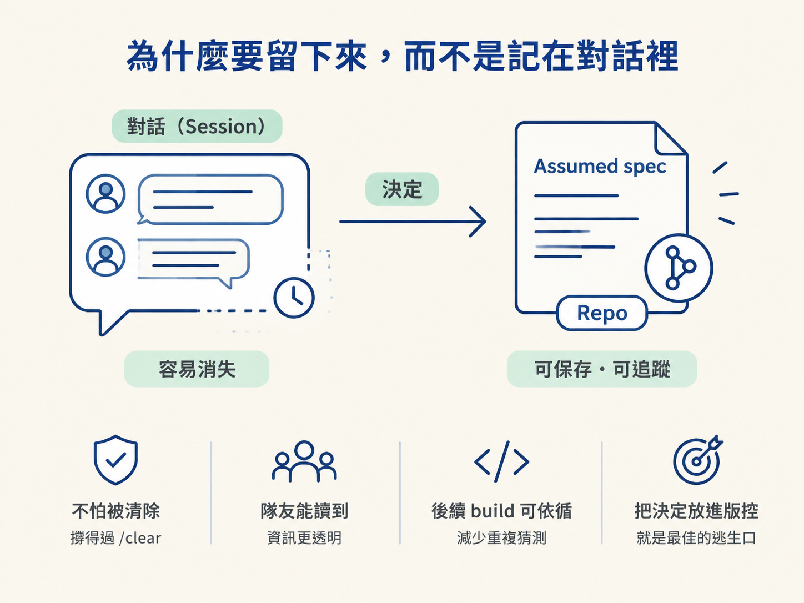
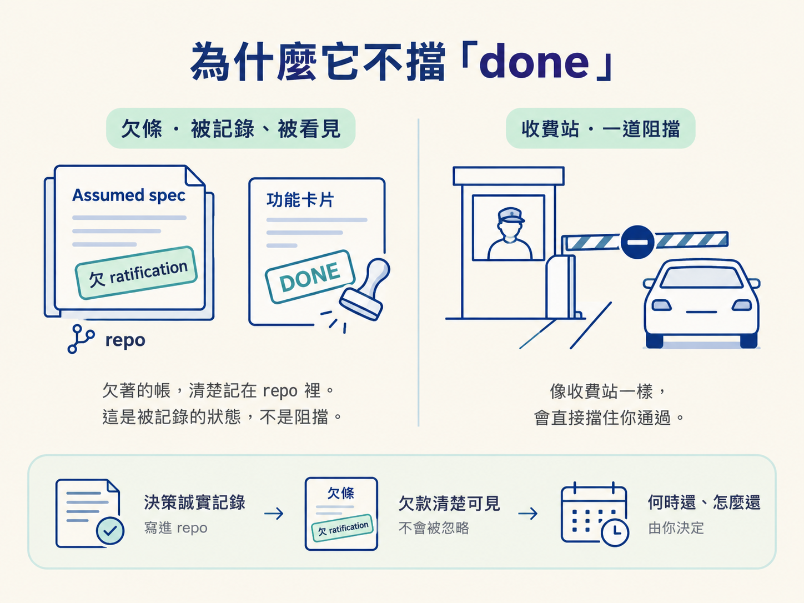

上一節的閘門把車停下來，問你：「這裡有個決定還沒做，怎麼辦？」多數時候，最乾淨的答案是先回 /architect，把決定討論並寫清楚。但現實不總是那麼從容。
你可能正趕著把流程走通，也可能心裡早有答案，只想先讓功能跑起來、看到畫面，再回頭補齊理由。這時，如果流程硬把你擋在門外，最常見的結果不是大家乖乖停下來，而是有人關掉檢查、在對話裡交代幾句，然後直接蓋過去。
這樣一來，決策又回到最不可靠的地方：會隨著 session 消失的對話裡。Assumed spec 就是為這種情境設計的逃生口。它不會讓你跳過閘門，只會先幫你把決定留下來，再繼續把功能做完。
看完這一節，你應該能說出 Assumed spec 記下了哪幾件事、它為什麼讓決策留在 repo 而不是對話裡，以及它為什麼不該擋住你把功能標成完成。
先回頭看前一節提到的第三條路：Build now, record it as an assumed spec。重點不只是「先蓋」，而是「先寫下來再蓋」。
假設你只在對話裡說：「這次先用這個登入方式吧。」然後繼續往下做。session 結束後，這段對話可能就消失了；隊友看不到，你自己隔週回來也未必記得細節。
更麻煩的是，下一次 /develop 在同一個區域工作時，repo 裡沒有任何東西可讀，只能重新猜一次。同一個決定因此被做了兩次，還可能得到不同結果。
如果先寫一份 Assumed spec，假設就成為 repo 裡的一份檔案。它撐得過 /clear，隊友讀得到，後續的 build 也能照著做，而不是重新猜。這個逃生口存在的理由，就是把決定從對話搬進版控。

它的形狀刻意保持精簡。它不假裝自己已經是一份完整、深思熟慮的決策記錄，只留下之後補票時需要的線索：
# NNNN · <feature>
**Status**: Assumed
**Date**: <today>
**Authorized by**: <engineer>, during /develop
## Owed decision
<還沒被做的那個載重選擇>
## Assumption built on
<這次 build 實際上採用什麼假設>
## Code area
<這次 build 會動到的路徑>
## Requirements
<從 scope 的 Done when 帶過來的驗收條件種子>
## Ratify
這份決策由 /develop 記下，未經討論。
跑 `/architect <feature>` 來討論並補票。
在那之前它會一直被標記為欠決定，但不會阻擋把功能標成 done。其中有三個欄位特別關鍵。
Owed decision 說清楚「欠的是哪一個決定」；Assumption built on 說清楚「這次實際先用了什麼」；Code area 說清楚「之後要去哪裡找這段程式碼」。這三樣就像欠條上的金額、用途和放置地點，讓未來的你或 /architect 知道該回到哪個現場，把臨時假設討論成正式決定。
寫完之後，/develop 會把 feature 的 scope spec 那行指向這份檔案，並讓 feature 維持在 in-progress，附上一行 assumed decision (spec NNNN) 的註記。從這一刻起，這份假設就在 repo 裡找得到。
這是整個設計最反直覺、也最值得記住的一點：Assumed spec 會一直掛著「欠 ratification」的記號，但這個記號不會阻擋你把功能標成 done。
如果把「欠補票」設成硬性關卡，逃生口就失去作用了。趕路的人很可能直接繞過整套流程，而不是留下這份 spec。相反地，讓欠票狀態只是被記錄、被看見，你就能先使用這條路，因為它不會把流程鎖死。
流程因此保有兩件事：決策被誠實地記在 repo 裡，欠著的那筆帳也清楚可見。但要不要現在還、什麼時候還，節奏仍然在你手上。它比較像放在版控裡的欠條，而不是一道不准通過的收費站。

Assumedspec 是閘門第三條路的產物：在動手前，把未決的載重選擇記成一份最小 spec。它記下 owed decision、assumption built on 和 code area，讓假設留下來、撐過清對話，也讓隊友和下一次 build 讀得到。它會一直被標記為欠 ratification，但絕不阻擋功能標成 done。一個不擋人的逃生口，才有人願意用，決策才不會又躲回對話裡。
但欠條終究要還。下一節要看的，就是 /architect 如何把這份暫定假設補成真正的決策記錄，以及當它發現當初的假設根本錯了時，會怎麼處理。